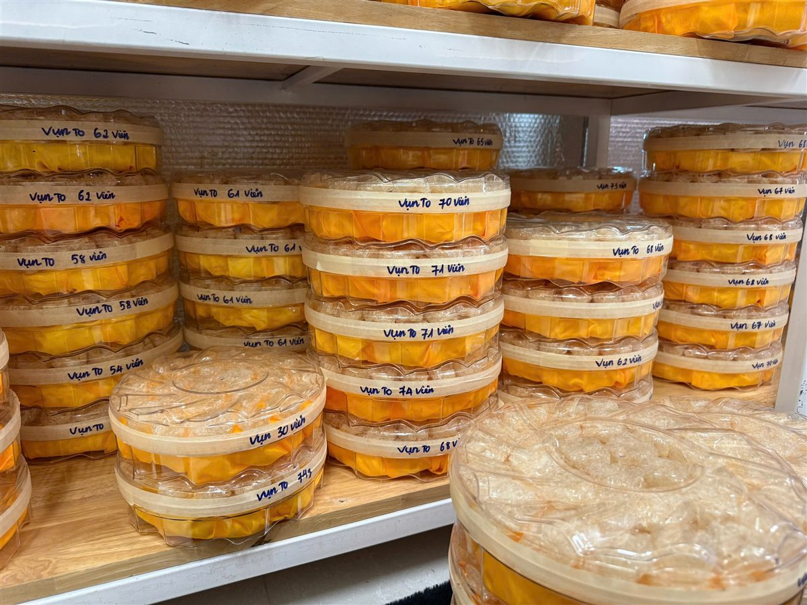

Một hộp yến tinh chế nhìn thì đơn giản: những tổ yến trắng ngà, sợi đều. Nhưng để có nó, mỗi tổ yến thô phải qua tay người thợ ngồi gắp từng sợi lông nhỏ. Nghề nhặt yến không có máy nào làm thay được phần việc chính. Bài này kể về đội thợ của Lanest và những nguyên tắc nghề mà đội giữ mỗi ngày.
Sợi yến sau khi làm sạch được thợ đắp lại thành khối trên khuôn lưới
1. Vì sao Lanest có đội thợ riêng
Trước đây Lanest lấy yến tinh chế qua tay đối tác. Đến khi người sáng lập Lanest, người sáng lập, đem 100g yến tinh chế mua về ngâm ra rồi sấy lại, chỉ còn 84g, Lanest quyết định tự làm. Từ năm 2023, Lanest có đội thợ riêng, hiện khoảng 12 thợ nhặt yến, có người phụ trách sản xuất quản lý thợ nhặt, thợ đảo và kiểm soát chất lượng yến tinh.
Tự làm thì kéo theo chi phí và rủi ro: có lúc hàng tồn, sản lượng bán ra không đạt. Nhưng người sáng lập Lanest vẫn giữ người. Nguyên văn lời chị:
"mình vẫn cố gắng là giữ giữ cái công việc cho những cái đội thợ làm nhà của mình"
2. Một mẻ yến đi qua những bước nào
- Nhận yến thô: tổ yến hái từ nhà yến về chỉ được làm sạch nhẹ bên ngoài, như nhặt bớt lông, bỏ vỏ trứng, mài bớt phần xấu của tổ. Lúc này tổ còn rất nhiều lông nhỏ bám bên trong sợi.
- Làm mềm: với yến tinh chế, tổ được ngâm nước sạch cho nở. Với yến rút lông khô, thợ không ngâm mà chỉ phun sương để rút lông, nên tổ giữ được hình chén.
- Nhặt: thợ dùng nhíp gắp từng sợi lông, từng hạt tạp chất. Đây là khâu tốn công nhất.
- Đảo lại: một thợ khác kiểm tra lại toàn bộ phần yến vừa nhặt.
- Đắp: sợi yến sạch được đắp vào khuôn thành tổ, hoặc chia thành viên, rồi sấy khô.
- Kiểm tra cuối: nhân viên xem lại lần nữa, đạt mới đóng hộp.
Bốn lượt kiểm (nhặt, đảo, đắp, kiểm tra cuối) chính là 4 chốt kiểm Lanest đã kể ở bài bên trong xưởng yến Lanest.
3. Ngâm bao lâu cũng là tay nghề
Người ngoài nghĩ ngâm yến thì cứ thả vào nước. Người làm nghề biết ngâm thiếu thì sợi cứng, khó nhặt; ngâm quá lâu thì sợi bở, nát khi đắp. Mỗi loại một khác: yến vụn chỉ cần khoảng 10 phút, chân yến tinh chế cần 30–45 phút.
Trong một buổi họp đội, có bạn kể đã ngâm một mẻ yến gần cả ngày. Người sáng lập Lanest nói ngay đó là chuyện thuộc về kỹ năng. Ngâm sai một mẻ là mất công của cả người nhặt lẫn người đảo phía sau.
4. Không bóp chanh, không chà muối, không tẩy trắng
Cũng trong buổi họp đó, có bạn kể đã chà muối, bóp chanh để mẻ yến bớt vàng. Người sáng lập Lanest ngạc nhiên:
"Bóp chanh nữa hả? Lần đầu tiên hả, nhặt yến bóp chanh á."
Rồi chị giải thích cho cả đội: có những tổ yến tự nhiên đã màu kem, cam vàng; tổ già cũng ngả vàng; những màu đó là bình thường, không cần "chữa". Chỉ khi yến chuyển sang vàng đậm hoặc đỏ là dấu hiệu bị nhiễm, và khi đó thì loại bỏ chứ không xử lý cho đẹp.
Đó cũng là lý do Lanest giữ ba điều: không tẩy trắng, không độn để tăng trọng lượng, không "chữa" hàng không đạt.

Yến đã làm sạch, đắp xong được xếp hộp, ghi tay tên loại trước khi kiểm tra và đóng gói
5. Cân đủ cho khách: nguyên tắc từ bài học 84 gram
Vì từng mua phải hộp yến "100g" mà thật ra chỉ còn 84g, Lanest rất nặng chuyện cân. Lời dặn đội của người sáng lập Lanest được ghi lại:
"phải luôn luôn cân đủ cho khách, sản phẩm không đạt yêu cầu phải loại thẳng tay ngay"
Với người mua, đây là phần không nhìn thấy được trên hộp yến. Anh chị chỉ có thể tin vào nơi bán, hoặc tự ngâm thử, sấy lại. Lanest chọn cách làm sao để khách không phải tự kiểm như vậy.
6. Người mua yến nên biết gì từ chuyện nghề này?
- Yến tinh chế càng sạch thì càng tốn công tay, nên giá khác yến thô là có lý do. Xem bài giá tổ yến phụ thuộc yếu tố nào.
- Yến trắng tinh bất thường chưa chắc là yến tốt; màu kem tự nhiên không phải lỗi.
- Sợi yến thật dai, rõ, ngâm nở từ từ; yến pha trộn bở, nở nhanh bất thường. Xem bài phân biệt yến sào thật giả.
- Hỏi nơi bán: ai làm sạch yến, có người kiểm lại không, có giấy kiểm nghiệm không.
Câu hỏi thường gặp
Yến Lanest làm sạch bằng máy hay bằng tay?
Phần nhặt lông, tạp chất do thợ làm bằng tay, có thợ khác đảo lại kiểm tra, sau đó mới đắp tổ và kiểm tra cuối trước khi đóng hộp.
Yến rút lông khô khác yến tinh chế ở khâu nào?
Yến rút lông khô không ngâm nước, chỉ phun sương để rút lông, sạch 98–99% lông tơ và giữ được hình tổ. Yến tinh chế được ngâm nở rồi nhặt sạch, đắp lại thành tổ hoặc chia viên.
Có được ghé xem đội thợ làm việc không?
Anh chị gọi 0258 6278 627 để hỏi lịch trước; Lanest luôn sẵn sàng cho khách xem cách làm và giấy kiểm nghiệm.